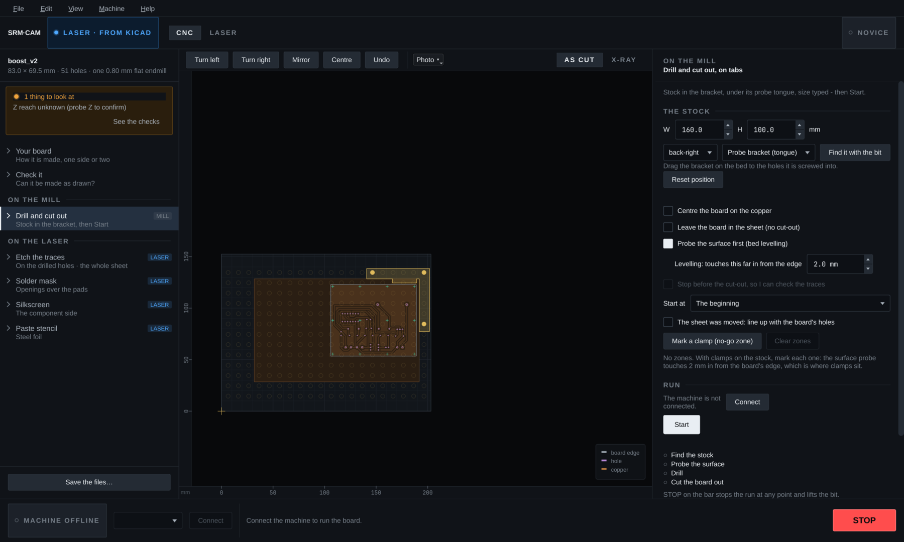
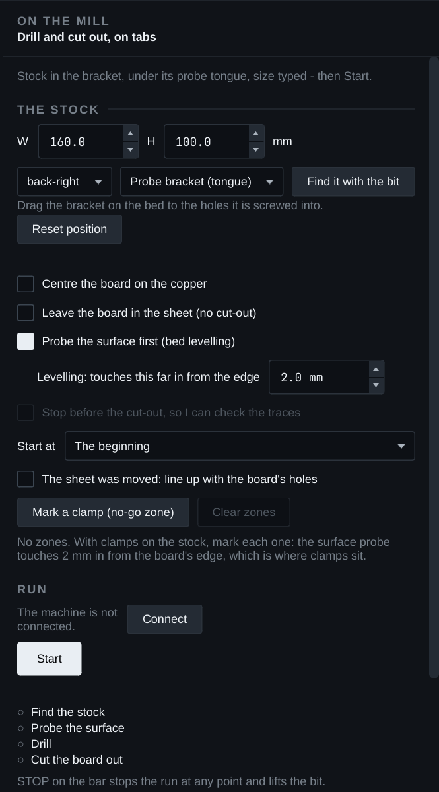
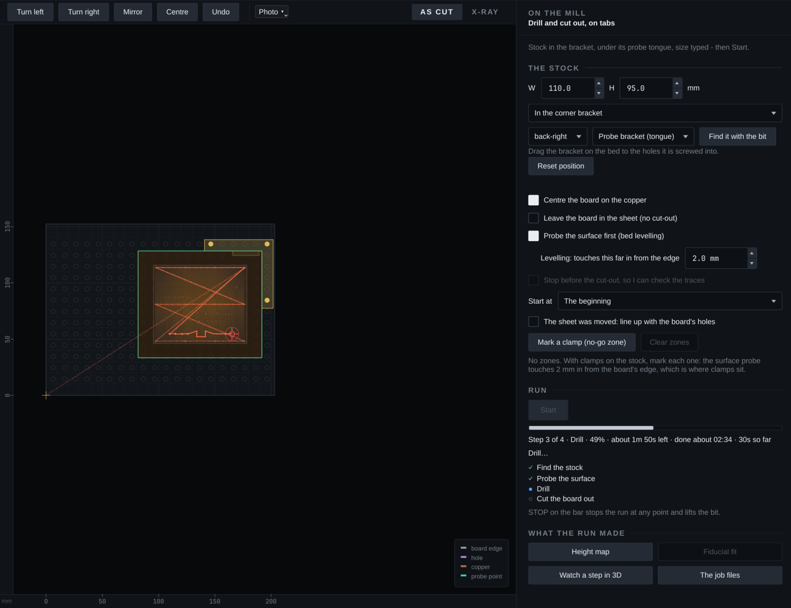
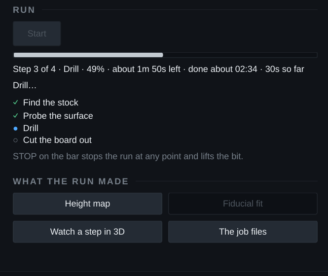

The mill page
The page behind the MILL row on the rail: Drill and cut out on a laser board, Mill it on a board the mill makes on its own. Set the sheet, press Start, and the run finds the copper, levels it and cuts, all in one go. This page goes through it top to bottom.

1 2 3 4 5- The row on the rail: Drill and cut out, "Stock in the bracket, then Start".
- The bracket, drawn where it is screwed to the bed (the lab's: back-right).
- The sheet, at the size you typed, and the board on it.
- The stock: its size, the bracket, and the ticks below.
- Run: Connect, Start, and the run's steps.
The stock

- W and H, in mm (10 to 200): measure the sheet and type it. In the bracket the run does not measure the sheet: it takes the bracket's inside corner plus the size you typed. A wrong size puts the board in the wrong place.
- The bracket: which corner it is in (the lab's is back-right) and which kind: Probe bracket (tongue) or Plain bracket. Drag the bracket on the bed to the holes it is screwed into, or press Find it with the bit: jog the bit over its inside corner and it snaps to the nearest holes. It is remembered on this PC.
- Reset position puts the board back in the bracket's corner of the sheet, 3 mm in from its edges and clear of the probe tongue. Dragging the board near the corner snaps it there.
- Centre the board on the copper puts it in the middle, with the spare shared on every side. Tick it for a laser board: the laser's camera marks then land in the waste on every side (why). It is remembered. Dragging the board turns it off.
- Leave the board in the sheet (no cut-out) is for a board about as big as the sheet: nothing is cut round the outline, and the board is pushed against the two edges away from the bracket. Not for a laser board: the tabs already keep it in its sheet, and this leaves no waste on two sides.
- Pro only: Anywhere - the probe finds its corner instead of In the corner bracket. Then the probe finds the sheet's edges and angle by itself, and checks its size. See Holding the copper.
If the board does not fit in the corner of the sheet you typed, SRM-CAM says how big the sheet must be, and how small the outline must be in KiCad.
Levelling
Probe the surface first (bed levelling) is on by default, also on a laser board. The probe touches the copper at 12 points, 4 × 3, Levelling: touches this far in from the edge (2.0 mm unless you change it), and every cut follows the surface it measured. The touches are drawn on the bed before you start.
- Stop before the cut-out, so I can check the traces is greyed out on a laser board: there are no traces to check until the laser. On a mill-only board it is on by default: see the check before the cut-out.
The run
- Connect"The machine is not connected." Press Connect (here or on the machine bar).
- The probe, the lidThe probe's contact on the sheet's copper: the probe bracket's tongue does it as the sheet slides in; with a plain bracket, clip the red clip on. Close the lid: the run waits for it ("Close the lid to carry on."), and stops at once if it was started with the lid open.
- StartPress Start. The steps tick off one by one: ○ waiting, ● running, ✓ done, ✕ failed, – skipped.


| Step on the page | What the mill does |
|---|---|
| Find the stock | One touch, 15 mm in from the bracket's corner, to find the copper. |
| Probe the surface | 12 touches, 4 × 3. Then it checks where the mill's G54 origin is before the first cut. |
| Drill | Every hole with the one 0.8 mm bit, 2.0 mm deep. Bigger holes are circled out. |
| Isolation traces (mill-only boards) | The copper. Then the check before the cut-out. |
| Cut the board out | The outline, 2.0 mm deep in two 1.0 mm passes, leaving four 1.5 mm tabs. |
At the end the head goes to the view position and the toast says "The board is done." On a laser board that means the mill is done: the board stays on its tabs, in its sheet, and goes to the laser (the hand-over).
- The tabs go along the longest straight sides, at least 2 mm from a corner: one on each side of a near-square board, two on each long side of a long one. A board edge that lies on the sheet's edge is not cut. Where the cut-out would run into the bracket's bar it stops just short, and says so: break that bit free afterwards.
- STOP on the machine bar, or Esc anywhere, stops the run. The steps already done stay ticked on the rail.
The commonest reasons, each with its exact message, are on Troubleshooting: the mill's USB not set up on this PC, the probe already reading contact, no copper under the touch, a sheet more than 1.0 mm out of flat, the board under the probe tongue, and a tool profile that needs two bits ("This tool profile needs 2 different bits…": pick the 0.8 mm flat profile on Your board).
Start at: finishing a board that stopped
Start at skips the steps before the one you pick: The beginning, or a step by name (Drill, Cut the board out, …). The stock must not have moved, unless you also tick the line-up below.
| What happened | Start at | Also |
|---|---|---|
| It stopped before the cut-out | Cut the board out | — |
| Holes not through; the sheet was not touched | Drill | — |
| Holes not through; the sheet was taken out and put back | Drill | Tick The sheet was moved: line up with the board's holes |
The sheet was moved: line up with the board's holes
Before anything is cut, the probe finds the board's mounting holes (or, with none, its widest drilled holes) by touch, fits the board to them, and every step goes through that fit. It needs at least two holes wider than the bit, far apart. It trusts the fit only if the holes agree within 0.15 mm; otherwise it stops and cuts nothing. The result is shown under the tick: "Lined up with the board's … holes: … The board is X … Y … mm from where the placement put it …".
Oval holes
KiCad's oval holes (slots) are read from the drill file and drilled with the same 0.8 mm bit as a row of overlapping plunges, a quarter of the slot's width apart. A board drilled before SRM-CAM cut oval holes gets Only the oval holes: drill just those (it shows only when the board has slots): Start then drills just the slots. Tick the line-up above too.
Mark a clamp (no-go zone)
With clamps on the sheet, mark each one so the bit and the touches keep clear of it: Mark a clamp (no-go zone), then click the bed hole the clamp is screwed into. How, and what it does: Holding the copper.
What the run made
Under the run: Height map, Fiducial fit (two-sided mill boards), Watch a step in 3D and The job files, which opens the run's folder:
In Documents/SRM-CAM/runs/<job>_<date>/ | What it is |
|---|---|
run.log | Every line the run said, with the time. |
height_map_bottom.csv | The 12 touches, as height differences from the first. |
01_drill_run.nc, 02_cutout_run.nc, … | Exactly what was sent to the mill. |
| The laser files | The traces, mask and silkscreen drawings (named in run.log). The laser page does not need them: it builds its jobs from the board that is loaded. |
Making a board on the mill alone? The differences are on Mill a whole board.